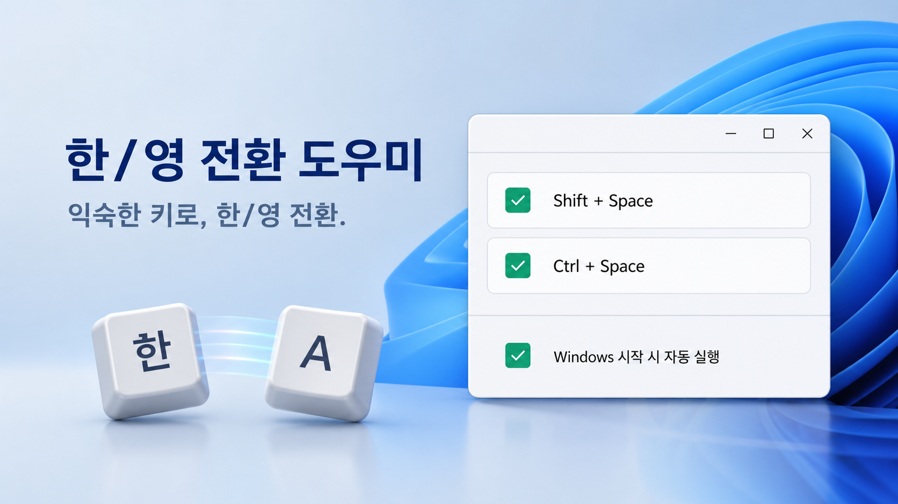

두 단축키를 내 방식대로
Shift + Space와 Ctrl + Space를 각각 켜거나 둘 다 사용할 수 있습니다.
✓ Windows 10/11 x64 · 관리자 권한 불필요
Shift + Space와 Ctrl + Space를 원하는 대로 켜고, 어느 프로그램에서든 빠르게 한글과 영문을 전환하세요.
무료 · 광고 없음 · 키 입력 내용을 기록하거나 전송하지 않음

작지만 꼭 필요한 기능만
Shift + Space와 Ctrl + Space를 각각 켜거나 둘 다 사용할 수 있습니다.
저장 버튼 없이 체크하는 순간 바로 적용되며, 최소 하나는 항상 유지됩니다.
창을 닫아도 작업 표시줄 알림 영역에서 가볍게 계속 실행됩니다.
키 입력 내용을 기록하지 않고 계정, 광고, 분석, 네트워크 통신도 없습니다.
아이콘을 두 번 클릭해 설정을 복원하고, 우클릭에서 설정·프로그램 정보·종료를 선택합니다.
작동 방식
보조키와 Space가 놓인 뒤 한/영 입력을 한 번 전달해 길게 눌러도 중복 전환되지 않도록 설계했습니다.
Shift + Space 또는 Ctrl + Space
눌린 키가 모두 놓일 때까지 대기
Microsoft 한국어 IME에 한 번 전달
설치 방법
v0.1.2 공개 후 GitHub 릴리스에서 최신 Windows x64 설치기를 내려받습니다.
코드 서명이 없어 SmartScreen이 표시될 수 있습니다. 출처가 이 GitHub 저장소인지 확인하세요.
관리자 권한 없이 현재 사용자 영역에 설치되고 시작 메뉴와 자동 실행이 준비됩니다.
GitHub 공개 릴리스 예정
사용 방법
어느 프로그램에서든 켜 둔 Shift + Space 또는 Ctrl + Space를 누르세요.
체크박스를 선택하거나 해제하면 저장 버튼 없이 즉시 반영됩니다.
트레이 아이콘을 두 번 클릭해 설정을 복원하거나 우클릭 메뉴의 설정 열기·프로그램 정보를 선택하세요.
창의 × 버튼은 숨기기입니다. 완전 종료는 트레이 메뉴의 종료를 사용하세요.
지원 환경
알아두세요
아니요. × 버튼을 누르면 트레이로 숨겨집니다. 완전히 종료하려면 트레이 메뉴에서 종료를 선택해 주세요.
전환 기능을 잃지 않도록 최소 하나는 항상 켜져 있어야 합니다.
아니요. 지정한 두 전역 단축키만 등록하며 입력 기록, 네트워크 전송, 분석 기능이 없습니다.
업데이트 내역
개선: 2026-09-01
트레이 콜백을 앱 이벤트 큐로 안전하게 전달하도록 라우팅 수정
트레이 아이콘 더블 클릭으로 기존 설정 창 복원 및 전경 표시
우클릭 메뉴에 설정 열기·활성 단축키 요약·프로그램 정보·종료 제공
Windows 실기기 HVC는 아직 미검증이며 서명되지 않은 설치기의 SmartScreen·UIPI 제한을 안내